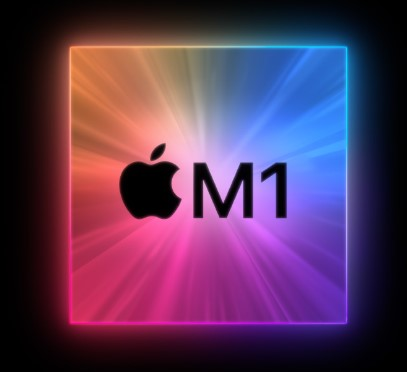
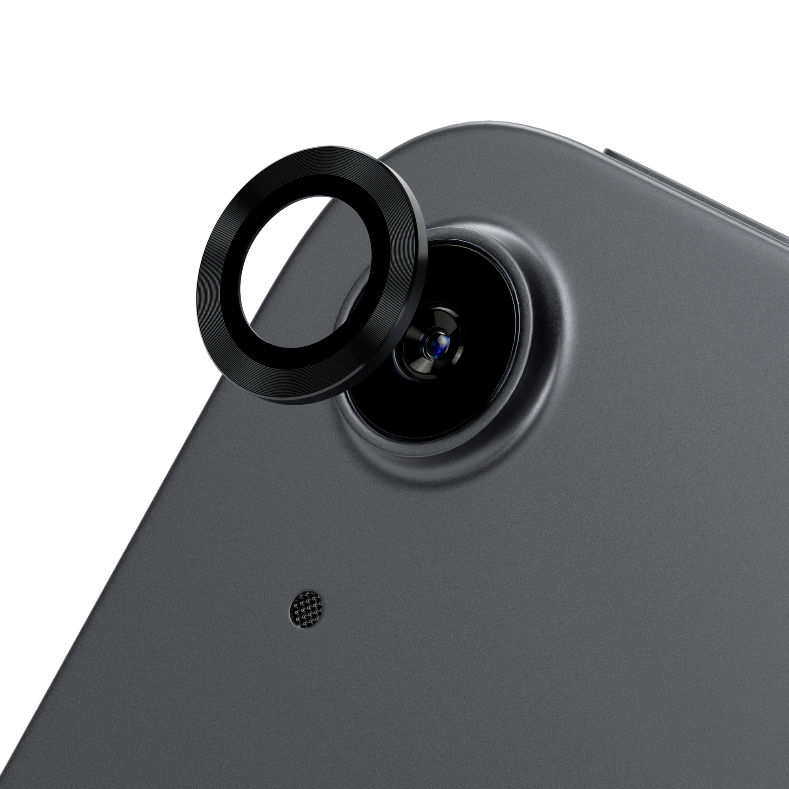

Der M1-Chip ist ein speziell von Apple entwickelter Hochleistungs-Mikroprozessor. Er
wird in einem 5-Nanometer-Verfahren hergestellt, das es ermöglicht, eine große Anzahl von Transistoren auf einer
kleinen Fläche unterzubringen, was zu einer schnelleren und effizienteren Leistung führt. Der Chip verfügt über
eine 8-Kern-CPU, eine 16-Kern-Neural-Engine und einen integrierten Grafikprozessor, die alle zusammenarbeiten,
um eine hohe Leistung für eine Vielzahl von Aufgaben zu bieten.
Einer der Hauptvorteile des M1-Chips ist seine Fähigkeit, sowohl iOS- als auch macOS-Apps nativ auszuführen, was
bedeutet, dass Benutzer ihre Lieblings-iPhone- und -iPad-Apps auf ihrem Mac ausführen können. Darüber hinaus
wurde der M1-Chip so konzipiert, dass er energieeffizient ist, was zu einer längeren Akkulaufzeit und einer
geringeren Wärmeentwicklung führt.

Das iPad Air verfügt über ein leistungsstarkes Kamerasystem, mit dem die Nutzer
beeindruckende Fotos und Videos aufnehmen können. Es hat eine 12-Megapixel-Hauptkamera und eine
7-Megapixel-Frontkamera, die beide mit fortschrittlichen Funktionen wie Autofokus, Belichtungssteuerung und
Rauschunterdrückung ausgestattet sind. Die rückwärtige Kamera kann außerdem 4K-Videos mit bis zu 60 Bildern pro
Sekunde aufnehmen und unterstützt Zeitlupen- und Zeitrafferaufnahmen. Die Kamera an der Vorderseite kann
ebenfalls 1080p HD-Videos aufnehmen. Neben der traditionellen Fotografie unterstützt das Kamerasystem des iPad
Air auch Augmented Reality (AR) Erlebnisse, die es Nutzern ermöglichen, mit digitalen Inhalten zu interagieren,
die der realen Welt überlagert sind. Insgesamt ist das Kamerasystem des iPad Air ein großartiges Werkzeug, um
Erinnerungen festzuhalten, mit anderen in Verbindung zu bleiben und neue Möglichkeiten mit AR zu erkunden.